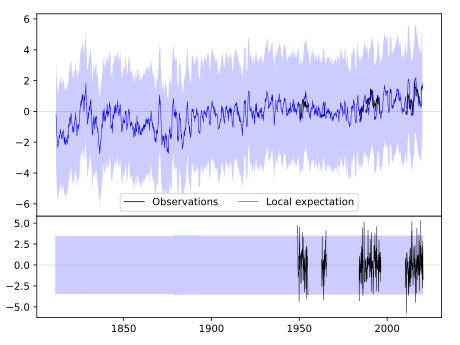
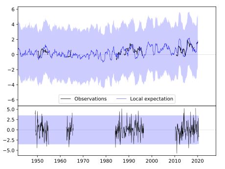
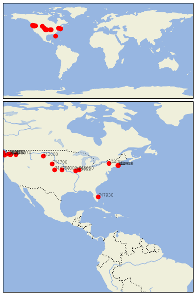

VERO-BEACH/MUNICIPAL [USA---------]


| Neighbour | Name | Country | Distance | Lon/Lat | Years |
|---|
| 747930 | VERO-BEACH/MUNICIPAL | USA--------- | 0 | -80.4, 27.7 | 1949-2020 |
| 745000 | LINCOLN | USA | 1612 | -89.3, 40.2 | 1893-2019 |
| 745602 | PERRY 6 NW | USA | 1651 | -90.8, 39.8 | 1887-2019 |
| 744001 | UTICA FAA AP | USA | 1770 | -75.4, 43.1 | 1826-2019 |
| 744902 | WEST MEDWAY | USA | 1796 | -71.4, 42.1 | 1885-2019 |
| 744900 | WALPOLE 2 | USA | 1814 | -71.2, 42.2 | 1884-2019 |
| 744920 | BLUE HILL | USA | 1818 | -71.1, 42.2 | 1811-2020 |
| 744000 | FAIRBURY 5S | USA | 2068 | -97.2, 40.1 | 1888-2019 |
| 744300 | MC COOK | USA | 2315 | -100.6, 40.2 | 1893-2019 |
| 744700 | MERRIMAN | USA | 2554 | -101.7, 42.9 | 1893-2019 |
| 742000 | MILES CITY AP | USA | 3047 | -105.9, 46.4 | 1877-2019 |
| 742074 | RITZVILLE 1 SSE | USA | 3932 | -118.4, 47.1 | 1892-2019 |
| 742760 | CLE ELUM | USA | 4115 | -120.9, 47.2 | 1893-2019 |
| 742072 | LAKE KACHESS | USA | 4140 | -121.2, 47.3 | 1909-1976 |
| 742073 | LAKE KEECHELUS | USA | 4147 | -121.3, 47.3 | 1914-1977 |
| 742077 | SNOQUALMIE FALLS | USA | 4190 | -121.8, 47.5 | 1894-2019 |
| 742075 | ABERDEEN | USA | 4320 | -123.8, 47.0 | 1891-2019 |
| 742110 | FORKS 1 E | USA | 4392 | -124.4, 48.0 | 1891-2019 |